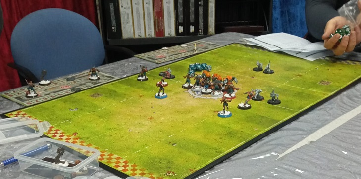
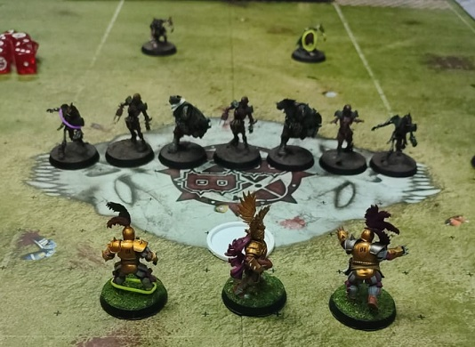
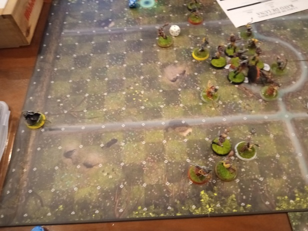
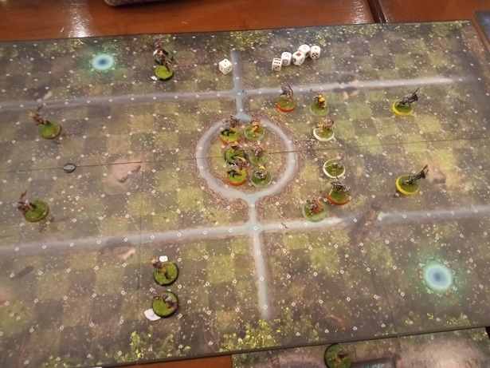
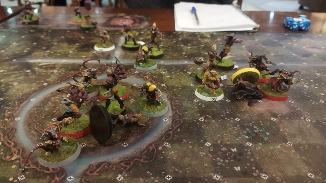

16/03/25
-¡Ah! Bob, que gusto volver a la emisora despues de la huelga de guionistas.
-¡Si, Jim! Pensaba que el sindicao nunca llegaría a un acuerdo con Cabal Visión.
-Bueno, Bob, estos conflictos laborales al final siempre se solucionan.
-Je, je je. Desde luego, Jim. Sobretodo cuando apareció el equipo negociodor de Cabal Visión. ¡Compuesto por seis ogros exjugadores!
-No conocía ese detalle.
-Fue una negociociaón de lo más corta. Creeme, yo estaba allí.
-En cualquier caso Cabal Visión se disculpa con los espectadores por no haber podido emitir imagenes en directo de la jornada 4 de la Liga Rayo de Luna. A continuación emitiremos algunas imagenes de archivo de la misma


-¡Esa me encanta, Jim! Es del final del partido entre Los Barones del Melon y Las Animas del Monte.
-Exacto, Bob. Podemos ver los pocos Barones supervivientes frente a las hordas No Muertas. ¿Sabías que algunos aficionados ya han empezado a llamar "Sepulcro de las lamentaciones" al banquillo rival que se enfrenta a este equipo?


